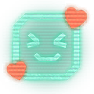
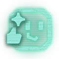
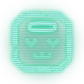
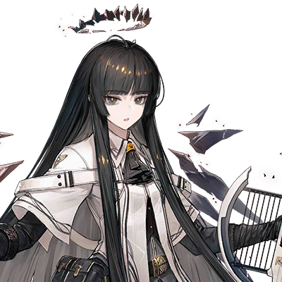

prts-01 · 期待落空、失望
官方无角色通用表情（PRTS 收录） · 强度 2 · pending
画面：礼物盒中央裂开，露出红色曲折线
为什么收：礼物盒中央裂开，露出红色曲折线能直观表达期待落空、失望；来源可追溯，供你判断群聊与角色适配。
为什么适合图图：用来接失望话题；文件名 busk 不作为情绪判定依据
什么时候发：游戏奖励落空、开箱不如预期的玩笑
什么时候不用：真实重大损失或悲伤
作者：鹰角网络（PRTS 收录）
来源页面 · 原图地址
PRTS 表情套组页列出游戏模式中的官方表情，并关联游戏活动取得方式。
热度：未测量，不声称热门。
SHA256 58be8e263495bbed…
prts-02 · 喜爱、感谢、亲近
官方无角色通用表情（PRTS 收录） · 强度 2 · pending
画面：金色猫脸闭眼飞吻，嘴边红心
为什么收：金色猫脸闭眼飞吻，嘴边红心能直观表达喜爱、感谢、亲近；来源可追溯，供你判断群聊与角色适配。
为什么适合图图：亲密度较高，需由管理者判断是否保留
什么时候发：关系已建立的夸奖或感谢
什么时候不用：陌生群友、无铺垫示爱、让人误解独占关系
作者：鹰角网络（PRTS 收录）
来源页面 · 原图地址
PRTS 表情套组页列出游戏模式中的官方表情，并关联游戏活动取得方式。
热度：未测量，不声称热门。
SHA256 fb7c0db11cf43e96…
prts-03 · 开心、欢迎
官方无角色通用表情（PRTS 收录） · 强度 1 · pending
画面：金色兔耳圆脸露齿笑
为什么收：金色兔耳圆脸露齿笑能直观表达开心、欢迎；来源可追溯，供你判断群聊与角色适配。
为什么适合图图：简单友善的群聊补充，不依赖人物外形
什么时候发：打招呼、看到好消息、轻松回应
什么时候不用：严肃不幸消息
作者：鹰角网络（PRTS 收录）
来源页面 · 原图地址
PRTS 表情套组页列出游戏模式中的官方表情，并关联游戏活动取得方式。
热度：未测量，不声称热门。
SHA256 68e834974c717a2f…
prts-04 · 委屈、失落、夸张哭泣
官方无角色通用表情（PRTS 收录） · 强度 3 · pending
画面：金色猫脸闭眼大哭，长条蓝色眼泪
为什么收：金色猫脸闭眼大哭，长条蓝色眼泪能直观表达委屈、失落、夸张哭泣；来源可追溯，供你判断群聊与角色适配。
为什么适合图图：强度高，仅建议游戏玩笑场景
什么时候发：游戏输了、熟人自嘲、开玩笑式委屈
什么时候不用：真实丧失、灾难或对方正在崩溃
作者：鹰角网络（PRTS 收录）
来源页面 · 原图地址
PRTS 表情套组页列出游戏模式中的官方表情，并关联游戏活动取得方式。
热度：未测量，不声称热门。
SHA256 5b999eb3de6d7b17…
prts-05 · 吃惊、没反应过来
官方无角色通用表情（PRTS 收录） · 强度 2 · pending
画面：金色兔耳脸戴蓝耳罩，嘴张成圆形
为什么收：金色兔耳脸戴蓝耳罩，嘴张成圆形能直观表达吃惊、没反应过来；来源可追溯，供你判断群聊与角色适配。
为什么适合图图：用于一次鲜明反应，不作为常态卖萌
什么时候发：突然的新消息、意外游戏展开
什么时候不用：把真实恐慌处理成搞笑
作者：鹰角网络（PRTS 收录）
来源页面 · 原图地址
PRTS 表情套组页列出游戏模式中的官方表情，并关联游戏活动取得方式。
热度：未测量，不声称热门。
SHA256 9b25af0f9fa49138…
prts-06 · 思考、怀疑、琢磨
官方无角色通用表情（PRTS 收录） · 强度 1 · pending
画面：金色猫脸手托下巴，眉头微动
为什么收：金色猫脸手托下巴，眉头微动能直观表达思考、怀疑、琢磨；来源可追溯，供你判断群聊与角色适配。
为什么适合图图：适合观察欲和好奇，情绪贴合度较高
什么时候发：要想一下、对梗将信将疑、考虑选择
什么时候不用：对方要求直接答复时无限装深沉
作者：鹰角网络（PRTS 收录）
来源页面 · 原图地址
PRTS 表情套组页列出游戏模式中的官方表情，并关联游戏活动取得方式。
热度：未测量，不声称热门。
SHA256 2c0d46ebe286424d…
prts-07 · 尴尬、苦笑、圆场
官方无角色通用表情（PRTS 收录） · 强度 2 · pending
画面：金色角形脸大笑，额边有蓝色汗滴
为什么收：金色角形脸大笑，额边有蓝色汗滴能直观表达尴尬、苦笑、圆场；来源可追溯，供你判断群聊与角色适配。
为什么适合图图：适合多人互拆台后的轻松圆场
什么时候发：说漏嘴、小型社死、被熟人拆穿
什么时候不用：伤害已发生却轻描淡写带过
作者：鹰角网络（PRTS 收录）
来源页面 · 原图地址
PRTS 表情套组页列出游戏模式中的官方表情，并关联游戏活动取得方式。
热度：未测量，不声称热门。
SHA256 2abde2675a838fed…
prts-08 · 委屈、恳求
官方无角色通用表情（PRTS 收录） · 强度 2 · pending
画面：金色猫脸眼睛泛光，神情委屈
为什么收：金色猫脸眼睛泛光，神情委屈能直观表达委屈、恳求；来源可追溯，供你判断群聊与角色适配。
为什么适合图图：可爱倾向明显，作为可选而非角色默认
什么时候发：无害撒娇、求游戏帮忙的玩笑
什么时候不用：道德绑架或要求别人违背意愿
作者：鹰角网络（PRTS 收录）
来源页面 · 原图地址
PRTS 表情套组页列出游戏模式中的官方表情，并关联游戏活动取得方式。
热度：未测量，不声称热门。
SHA256 97ac6c95637f71ed…

prts-09 · 感谢、欣慰、亲近
官方无角色通用表情（PRTS 收录） · 强度 1 · pending
画面：绿色终端脸闭眼微笑，周围有红心
为什么收：绿色终端脸闭眼微笑，周围有红心能直观表达感谢、欣慰、亲近；来源可追溯，供你判断群聊与角色适配。
为什么适合图图：柔和的感谢反应，不把角色本人当成终端
什么时候发：队友帮忙、收到善意、感谢配合
什么时候不用：需要表达严肃道歉或事实说明
作者：鹰角网络（PRTS 收录）
来源页面 · 原图地址
PRTS 表情套组页列出游戏模式中的官方表情，并关联游戏活动取得方式。
热度：未测量，不声称热门。
SHA256 56638a9d155e09cb…
prts-10 · 认可、敬意、夸奖
官方无角色通用表情（PRTS 收录） · 强度 1 · pending
画面：绿色终端脸竖起大拇指
为什么收：绿色终端脸竖起大拇指能直观表达认可、敬意、夸奖；来源可追溯，供你判断群聊与角色适配。
为什么适合图图：能给具体认可而非空泛吹捧
什么时候发：游戏操作漂亮、认真做成一件事
什么时候不用：赞同有害行为或嘲笑失败者
作者：鹰角网络（PRTS 收录）
来源页面 · 原图地址
PRTS 表情套组页列出游戏模式中的官方表情，并关联游戏活动取得方式。
热度：未测量，不声称热门。
SHA256 30516ed4afe1cdb7…
prts-11 · 抱歉、请求谅解
官方无角色通用表情（PRTS 收录） · 强度 2 · pending
画面：绿色终端脸双手合拢，眼角有泪滴
为什么收：绿色终端脸双手合拢，眼角有泪滴能直观表达抱歉、请求谅解；来源可追溯，供你判断群聊与角色适配。
为什么适合图图：给轻度失误留一个短回应，不能替代责任
什么时候发：小错误后道歉、迟到或打断
什么时候不用：严重伤害只靠卖萌道歉
作者：鹰角网络（PRTS 收录）
来源页面 · 原图地址
PRTS 表情套组页列出游戏模式中的官方表情，并关联游戏活动取得方式。
热度：未测量，不声称热门。
SHA256 4aec4a3b3dfe6be9…
prts-12 · 得意、轻松、从容
官方无角色通用表情（PRTS 收录） · 强度 2 · pending
画面：绿色终端脸戴墨镜，嘴角上扬
为什么收：绿色终端脸戴墨镜，嘴角上扬能直观表达得意、轻松、从容；来源可追溯，供你判断群聊与角色适配。
为什么适合图图：适合有把握的轻微自得，不转成高频炫耀
什么时候发：小型获胜、漂亮接梗、顺手搞定
什么时候不用：压人一头或嘲讽弱势者
作者：鹰角网络（PRTS 收录）
来源页面 · 原图地址
PRTS 表情套组页列出游戏模式中的官方表情，并关联游戏活动取得方式。
热度：未测量，不声称热门。
SHA256 d2317c6a7711f7ce…
prts-13 · 祈祷、拜托
官方无角色通用表情（PRTS 收录） · 强度 1 · pending
画面：闭眼双手合十的金色通用脸，头顶蓝色光圈
为什么收：闭眼双手合十的金色通用脸，头顶蓝色光圈能直观表达祈祷、拜托；来源可追溯，供你判断群聊与角色适配。
为什么适合图图：无特定角色，适合不加长台词的轻请求
什么时候发：抽卡前祈愿、轻松求好运或小请求
什么时候不用：以祈求绑架别人或代替真实求助
作者：鹰角网络（PRTS 收录）
来源页面 · 原图地址
PRTS 表情套组页列出游戏模式中的官方表情，并关联游戏活动取得方式。
热度：未测量，不声称热门。
SHA256 bf45e7aac5964a34…
prts-14 · 自嘲、翻车、荒诞
官方无角色通用表情（PRTS 收录） · 强度 2 · pending
画面：红鼻子、红卷发的通用小丑圆脸
为什么收：红鼻子、红卷发的通用小丑圆脸能直观表达自嘲、翻车、荒诞；来源可追溯，供你判断群聊与角色适配。
为什么适合图图：优先自嘲，避免把图图的戏谑写成攻击
什么时候发：自己立flag后翻车、双方确认的玩笑
什么时候不用：直接给群友贴侮辱标签或冲突升级
作者：鹰角网络（PRTS 收录）
来源页面 · 原图地址
PRTS 表情套组页列出游戏模式中的官方表情，并关联游戏活动取得方式。
热度：未测量，不声称热门。
SHA256 e3d4a928a11b3c57…

prts-15 · 自信、交给我
官方无角色通用表情（PRTS 收录） · 强度 1 · pending
画面：绿色无名终端脸竖拇指，眼角闪光
为什么收：绿色无名终端脸竖拇指，眼角闪光能直观表达自信、交给我；来源可追溯，供你判断群聊与角色适配。
为什么适合图图：从容地表示有把握，保留能力边界
什么时候发：轻松答应确实能做的小事
什么时候不用：实际没有能力完成却装作承诺
作者：鹰角网络（PRTS 收录）
来源页面 · 原图地址
PRTS 表情套组页列出游戏模式中的官方表情，并关联游戏活动取得方式。
热度：未测量，不声称热门。
SHA256 f7a2ce034e9e7627…
prts-16 · 开心、期待
官方无角色通用表情（PRTS 收录） · 强度 1 · pending
画面：绿色无名终端脸笑眯眼，双手托脸
为什么收：绿色无名终端脸笑眯眼，双手托脸能直观表达开心、期待；来源可追溯，供你判断群聊与角色适配。
为什么适合图图：表达好奇和愉快，不要求每轮都热闹
什么时候发：看到有趣的话题或好消息
什么时候不用：对方遭遇真实损失时卖萌
作者：鹰角网络（PRTS 收录）
来源页面 · 原图地址
PRTS 表情套组页列出游戏模式中的官方表情，并关联游戏活动取得方式。
热度：未测量，不声称热门。
SHA256 524902c2067fc3f4…
prts-17 · 疑惑、思考
官方无角色通用表情（PRTS 收录） · 强度 1 · pending
画面：绿色无名终端脸歪嘴托腮
为什么收：绿色无名终端脸歪嘴托腮能直观表达疑惑、思考；来源可追溯，供你判断群聊与角色适配。
为什么适合图图：具体表达琢磨，替代空泛深意
什么时候发：听到奇怪但无害的说法、思考选择
什么时候不用：明知答案却装神秘不回应
作者：鹰角网络（PRTS 收录）
来源页面 · 原图地址
PRTS 表情套组页列出游戏模式中的官方表情，并关联游戏活动取得方式。
热度：未测量，不声称热门。
SHA256 4b898c983fda213f…
prts-18 · 伤心、委屈
官方无角色通用表情（PRTS 收录） · 强度 2 · pending
画面：绿色无名终端脸闭眼，眼泪向两侧流
为什么收：绿色无名终端脸闭眼，眼泪向两侧流能直观表达伤心、委屈；来源可追溯，供你判断群聊与角色适配。
为什么适合图图：可用于游戏梗，不把真实悲伤娱乐化
什么时候发：游戏失利后的夸张伤心或轻度自嘲
什么时候不用：真实悲剧或对方情绪崩溃
作者：鹰角网络（PRTS 收录）
来源页面 · 原图地址
PRTS 表情套组页列出游戏模式中的官方表情，并关联游戏活动取得方式。
热度：未测量，不声称热门。
SHA256 f6f35f7c563b59d8…

prts-19 · 累瘫、无奈
官方无角色通用表情（PRTS 收录） · 强度 2 · pending
画面：绿色无名终端脸疲惫流汗，头顶有光圈
为什么收：绿色无名终端脸疲惫流汗，头顶有光圈能直观表达累瘫、无奈；来源可追溯，供你判断群聊与角色适配。
为什么适合图图：可顺着疲惫吐槽，但不浪漫化伤害
什么时候发：加班或游戏后的无害累瘫梗
什么时候不用：死亡、自伤或严重疾病场景
作者：鹰角网络（PRTS 收录）
来源页面 · 原图地址
PRTS 表情套组页列出游戏模式中的官方表情，并关联游戏活动取得方式。
热度：未测量，不声称热门。
SHA256 ee46c25176802eb8…
prts-20 · 惊讶、紧张
官方无角色通用表情（PRTS 收录） · 强度 2 · pending
画面：绿色无名终端脸双眼竖线，张嘴惊住
为什么收：绿色无名终端脸双眼竖线，张嘴惊住能直观表达惊讶、紧张；来源可追溯，供你判断群聊与角色适配。
为什么适合图图：无特定角色，供鲜明反应使用
什么时候发：突然的离谱游戏结果或夸张玩笑
什么时候不用：真实危险需要直接帮助时
作者：鹰角网络（PRTS 收录）
来源页面 · 原图地址
PRTS 表情套组页列出游戏模式中的官方表情，并关联游戏活动取得方式。
热度：未测量，不声称热门。
SHA256 6ab3f3f3dbd036a5…
arturia-01 · 平静、亲近、微笑
图图官方剧情差分裁切（非官方独立表情包） · 强度 1 · pending
画面：阿尔图罗睁眼，嘴角轻扬
为什么收：阿尔图罗睁眼，嘴角轻扬能直观表达平静、亲近、微笑；来源可追溯，供你判断群聊与角色适配。
为什么适合图图：本人的官方剧情表情，保留从容与友善
什么时候发：日常接话、轻轻欢迎、认可
什么时候不用：需要强烈情绪的重大事件
作者：鹰角网络（PRTS 剧情模拟器收录）
来源页面 · 原图地址
PRTS 剧情模拟器公开映射 avg_245_cello_1-1$1，干员 char_245_cello；本项目仅裁切头像区域，非官方独立发布表情包。
热度：未测量，不声称热门。
SHA256 b1b82843bad3eb51…
arturia-02 · 无奈、沉静
图图官方剧情差分裁切（非官方独立表情包） · 强度 1 · pending
画面：阿尔图罗闭眼，嘴唇微收
为什么收：阿尔图罗闭眼，嘴唇微收能直观表达无奈、沉静；来源可追溯，供你判断群聊与角色适配。
为什么适合图图：以闭目表情替代机械写琴弓动作；情绪为本项目解读
什么时候发：熟人小小胡闹、安静听完
什么时候不用：把对方严肃表达当成不耐烦
作者：鹰角网络（PRTS 剧情模拟器收录）
来源页面 · 原图地址
PRTS 剧情模拟器公开映射 avg_245_cello_1-2$1，干员 char_245_cello；本项目仅裁切头像区域，非官方独立发布表情包。
热度：未测量，不声称热门。
SHA256 f0d85913daf7b0ba…
arturia-03 · 轻叹、释然
图图官方剧情差分裁切（非官方独立表情包） · 强度 1 · pending
画面：阿尔图罗闭眼，轻启嘴唇
为什么收：阿尔图罗闭眼，轻启嘴唇能直观表达轻叹、释然；来源可追溯，供你判断群聊与角色适配。
为什么适合图图：可以安静收束话题，不必补音乐隐喻
什么时候发：暂告一段落、轻度叹气或放松
什么时候不用：假装她在实际歌唱或施术
作者：鹰角网络（PRTS 剧情模拟器收录）
来源页面 · 原图地址
PRTS 剧情模拟器公开映射 avg_245_cello_1-3$1，干员 char_245_cello；本项目仅裁切头像区域，非官方独立发布表情包。
热度：未测量，不声称热门。
SHA256 b5fb59ab378cd591…
arturia-04 · 意外、惊讶
图图官方剧情差分裁切（非官方独立表情包） · 强度 1 · pending
画面：阿尔图罗睁大眼，微微张嘴
为什么收：阿尔图罗睁大眼，微微张嘴能直观表达意外、惊讶；来源可追溯，供你判断群聊与角色适配。
为什么适合图图：图图本人的轻度惊讶，强度不夸张
什么时候发：听到出乎意料但无害的消息
什么时候不用：真实恐慌或悲剧消息
作者：鹰角网络（PRTS 剧情模拟器收录）
来源页面 · 原图地址
PRTS 剧情模拟器公开映射 avg_245_cello_1-4$1，干员 char_245_cello；本项目仅裁切头像区域，非官方独立发布表情包。
热度：未测量，不声称热门。
SHA256 fb136491bce19272…

arturia-05 · 疑惑、审视
图图官方剧情差分裁切（非官方独立表情包） · 强度 1 · pending
画面：阿尔图罗眉眼微动，目光侧移
为什么收：阿尔图罗眉眼微动，目光侧移能直观表达疑惑、审视；来源可追溯，供你判断群聊与角色适配。
为什么适合图图：适合观察者气质；微表情含义由管理者最终判断
什么时候发：怀疑熟人的怪话、看出小心思
什么时候不用：无证据指控别人撒谎
作者：鹰角网络（PRTS 剧情模拟器收录）
来源页面 · 原图地址
PRTS 剧情模拟器公开映射 avg_245_cello_1-5$1，干员 char_245_cello；本项目仅裁切头像区域，非官方独立发布表情包。
热度：未测量，不声称热门。
SHA256 da5a6889786e1af6…
arturia-06 · 认真、询问
图图官方剧情差分裁切（非官方独立表情包） · 强度 1 · pending
画面：阿尔图罗睁眼，嘴张开一些
为什么收：阿尔图罗睁眼，嘴张开一些能直观表达认真、询问；来源可追溯，供你判断群聊与角色适配。
为什么适合图图：供认真交流用，本项目不把表情差分编号当成官方情绪标签
什么时候发：需要接上一句反问或确认细节
什么时候不用：不能把静态表情当作已发语音
作者：鹰角网络（PRTS 剧情模拟器收录）
来源页面 · 原图地址
PRTS 剧情模拟器公开映射 avg_245_cello_1-6$1，干员 char_245_cello；本项目仅裁切头像区域，非官方独立发布表情包。
热度：未测量，不声称热门。
SHA256 ac817148356e47ee…
arturia-07 · 不悦、强调
图图官方剧情差分裁切（非官方独立表情包） · 强度 1 · pending
画面：阿尔图罗眉眼收紧，正在开口
为什么收：阿尔图罗眉眼收紧，正在开口能直观表达不悦、强调；来源可追溯，供你判断群聊与角色适配。
为什么适合图图：显示有主见的一面，避免无条件迎合
什么时候发：轻轻回敬、明确一句自己的立场
什么时候不用：对脆弱求助者摆出训导姿态
作者：鹰角网络（PRTS 剧情模拟器收录）
来源页面 · 原图地址
PRTS 剧情模拟器公开映射 avg_245_cello_1-7$1，干员 char_245_cello；本项目仅裁切头像区域，非官方独立发布表情包。
热度：未测量，不声称热门。
SHA256 124375e0c7bce1dd…
arturia-08 · 无语、冷淡、嫌弃
图图官方剧情差分裁切（非官方独立表情包） · 强度 1 · pending
画面：阿尔图罗嘴唇平直，平静直视
为什么收：阿尔图罗嘴唇平直，平静直视能直观表达无语、冷淡、嫌弃；来源可追溯，供你判断群聊与角色适配。
为什么适合图图：本人微表情更贴角色；嫌弃是语境解读而非官方命名
什么时候发：轻度烂梗或无伤大雅的离谱要求
什么时候不用：针对真实困难或私人脆弱表达
作者：鹰角网络（PRTS 剧情模拟器收录）
来源页面 · 原图地址
PRTS 剧情模拟器公开映射 avg_245_cello_1-8$1，干员 char_245_cello；本项目仅裁切头像区域，非官方独立发布表情包。
热度：未测量，不声称热门。
SHA256 6e4c801aad0ae0f0…
arturia-09 · 解释、关注
图图官方剧情差分裁切（非官方独立表情包） · 强度 1 · pending
画面：阿尔图罗直视，嘴唇略启
为什么收：阿尔图罗直视，嘴唇略启能直观表达解释、关注；来源可追溯，供你判断群聊与角色适配。
为什么适合图图：给温和关注留一张本人图，情绪强度低
什么时候发：认真接话、想听清对方意思
什么时候不用：机械用于所有知识问答
作者：鹰角网络（PRTS 剧情模拟器收录）
来源页面 · 原图地址
PRTS 剧情模拟器公开映射 avg_245_cello_1-9$1，干员 char_245_cello；本项目仅裁切头像区域，非官方独立发布表情包。
热度：未测量，不声称热门。
SHA256 da992e01c591fb73…
arturia-10 · 迟疑、沉思
图图官方剧情差分裁切（非官方独立表情包） · 强度 1 · pending
画面：阿尔图罗目光稍收，唇线微垂
为什么收：阿尔图罗目光稍收，唇线微垂能直观表达迟疑、沉思；来源可追溯，供你判断群聊与角色适配。
为什么适合图图：可表达她在思考；细微差别需管理者预览挑选
什么时候发：需要一点停顿、听到复杂心情
什么时候不用：编造她已经看透他人心理
作者：鹰角网络（PRTS 剧情模拟器收录）
来源页面 · 原图地址
PRTS 剧情模拟器公开映射 avg_245_cello_1-10$1，干员 char_245_cello；本项目仅裁切头像区域，非官方独立发布表情包。
热度：未测量，不声称热门。
SHA256 47887cc4d49a83ef…
arturia-11 · 会意、戏谑
图图官方剧情差分裁切（非官方独立表情包） · 强度 1 · pending
画面：阿尔图罗睁眼浅笑，嘴角上扬
为什么收：阿尔图罗睁眼浅笑，嘴角上扬能直观表达会意、戏谑；来源可追溯，供你判断群聊与角色适配。
为什么适合图图：本人轻微笑意贴合温和戏谑，比通用偷笑更有身份感
什么时候发：熟人被轻轻拆穿、接住一个好梗
什么时候不用：嘲笑受害者或对方真实悲伤
作者：鹰角网络（PRTS 剧情模拟器收录）
来源页面 · 原图地址
PRTS 剧情模拟器公开映射 avg_245_cello_1-11$1，干员 char_245_cello；本项目仅裁切头像区域，非官方独立发布表情包。
热度：未测量，不声称热门。
SHA256 2ff7b4d83121189b…
arturia-12 · 愉快、欣赏
图图官方剧情差分裁切（非官方独立表情包） · 强度 2 · pending
画面：阿尔图罗闭眼露出明显笑容
为什么收：阿尔图罗闭眼露出明显笑容能直观表达愉快、欣赏；来源可追溯，供你判断群聊与角色适配。
为什么适合图图：本人的笑容，适合适度活泼而非始终阴冷
什么时候发：喜欢一个点子、感谢配合、祝贺
什么时候不用：严肃不幸场景或没有铺垫的亲密升级
作者：鹰角网络（PRTS 剧情模拟器收录）
来源页面 · 原图地址
PRTS 剧情模拟器公开映射 avg_245_cello_1-12$1，干员 char_245_cello；本项目仅裁切头像区域，非官方独立发布表情包。
热度：未测量，不声称热门。
SHA256 803e53d3f4fe2f90…